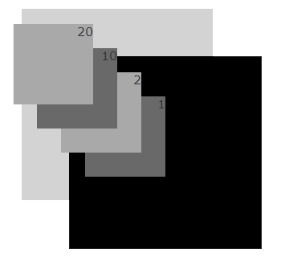

两个元素的平等级别祖先元素z-index高的，显示于上面。俗称：后台硬占据最高点。
在IE6/7浏览器中，定位元素的 z-index 层级是相对于各自的父级容器，所以会导致 z-index 出现 错误的表现 如下。
#yellow p
应该是在上面的
HTML：
<div id="yellow">
<p>#yellow p<br>应该是在上面的</p>
</div>
<div id="green">#green<br>IE6/7显示在上面，实际上应该在下面</div>
CSS：
#yellow{position:relative;top:40px;}
#yellow p, #green{width:200px;height:200px;background-color:#9c0;;}
#yellow p{position:absolute;background-color:#FF0;z-index:100000;}
#green{position:absolute;top:20px;left:150px;z-index:10;}
层级高低不仅要看本身，还要看自己的父元素是否给力：父元素的 position 属性为 relative或absolute 时，子元素的 absolute 属性是相对于父元素而言的。而在IE6下的层级的表现有时候不是看子元素的 z-index 多高，而要看它们的父元素的 z-index 谁高谁低。
也可以这样理解，子元素层级再高也高不过父级的同辈元素(可以高过自己的父辈元素)。
<div style="position:absolute; background:lightgrey;" class="parent">
<div style="position:absolute;z-index:20;background:darkgray;" class="sub">20</div>
<div style="position:absolute;z-index:10;background:dimgray;" class="sub lt">10</div>
</div>
<div style="position:absolute;left:80px;top:100px;background:black;" class="parent">
<div style="position:absolute;z-index:2;background:darkgray;" class="sub">2</div>
<div style="position:absolute;z-index:1;background:dimgray;" class="sub lt">1</div>
</div>
| IE6 IE7 IE8(Q) | IE8(S) Firefox Safari Chrome |
|---|---|
|  |
注：Q代表Quriks Mode，即混杂模式。
在制作当前浮动层覆盖父级同辈元素时，可在 :hover 时，提升当前元素父层的层级。